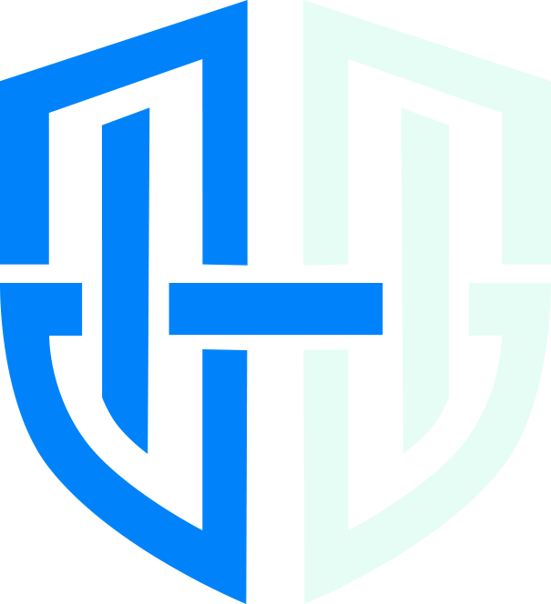

HedgeVersão dark · sistema completo
O app já tem dark mode com base #0A0A0B e vidro fosco — mas as fases 1–6 garantiram só o light. Aqui está o dark definido para cada classe de componente que as telas usam, mais os ajustes que faltam.
01 · Superfícies
A profundidade vem do vidro e da borda clara — não de sombras pesadas nem de mais tons de cinza.
Base
#0A0A0B
Fundo da página. Preto-azulado, nunca preto puro.
Cartão · vidro
zinc-900 @ 55%
Blur 14px + brilho interno no topo. É este cartão.
Menu · vidro denso
zinc-900 @ 70%
Blur 20px. Só a barra lateral usa este.
Regra dura: o vidro é aplicado pela regra global que casa dark:bg-zinc-900. Todo cartão precisa usar exatamente essa classe — escrever dark:bg-zinc-900/50 ou um hex sai silenciosamente do sistema e fica opaco no meio dos outros.
02 · Texto
No light o secundário é zinc-500; no dark ele sobe para zinc-400. Nunca use zinc-600 para texto no dark — desaparece sobre o vidro.
03 · Acento e semânticos
A regra que resolve 90% do dark: fundo colorido mantém o tom 600 (com texto branco), mas texto e ícone coloridos sobem para o 400.
Preenchimento · tom 600
Texto e ícone · tom 400
Hoje está inconsistente: o app mistura dark:text-emerald-400, emerald-500 (PageHeader) e casos sem variante dark nenhuma — onde o emerald-600 do light fica escuro demais sobre o vidro.
04 · Componentes das telas
Menu lateral
Ativo: fundo emerald/12% + barra emerald-500, texto emerald-300. Hover: branco a 6%.
Saldo livre · disponível agora
Saldo total
R$ 5.690,00
A receber
R$ 340,00
Meus gastos
R$ 1.366,80
Crédito
R$ 892,40
Débito
R$ 474,40
Pago
R$ 611,20
Fixos
R$ 1.890,00
Mercado
Alimentação
Empréstimo p/ Lucas
Dívida · em aberto
Uber
Transporte · pago
Linhas de lista no dark usam branco a 2,5% — não um zinc sólido. Estado (dívida/pago) vem de tinta translúcida, nunca de borda lateral colorida. No item pago, um só recurso de atenuação: texto em zinc-400 + tachado — sem opacity por cima, que empilharia e derrubaria o contraste.
Barras e metas
Trilho = branco a 7%. Preenchimento mantém o tom 500 do light.
Gráficos
Linha sobe para emerald-400 e a grade vira branco a 6% — o #F4F4F5 do light fica ofuscante aqui.
Formulário e modal
Campos no dark são branco a 4% com borda a 9% — e ficam sem vidro (a regra global já desliga blur em input/select/textarea, senão o texto digitado tremeluz). Modal: overlay #000/65 com blur, corpo no vidro denso de 70%.
05 · O que falta corrigir
Achados lendo o código atual — as fases 1–6 cuidaram do light, estas são específicas do escuro.
Hover do dark quebrado em ~12 lugares
O padrão hover:bg-zinc-200 dark:bg-zinc-700 dark:hover:bg-zinc-700 tem um dark:bg-zinc-700 sem hover: — o estado normal já nasce claro e o hover não muda nada.
Regra global deixa todo dark:bg-zinc-800 a 50%
A última regra do index.css foi feita para o painel de notificações, mas atinge toda a aplicação: chips e badges que deviam ser sólidos ficam translúcidos sobre o vidro. Restrinja o seletor ao painel.
Acentos sem variante dark
Vários text-emerald-600 / text-amber-600 não têm par dark: e ficam escuros sobre o vidro. Aplique a regra do item 03: texto colorido → tom 400.
Gráficos com hex de tema claro
O Recharts recebe grade #F4F4F5 e eixos #A1A1AA fixos — no escuro a grade grita mais que os dados. Derive do tema.
Base neutralizada — trocar no index.css
O app ainda tem a base azulada #0B0F19, que dissonava dos cartões zinc (neutro). Decisão tomada: neutralizar para #0A0A0B — o dark passa a ser um preto neutro coerente com o zinc, e o esmeralda fica sendo a única cor da tela. Trocar nas duas regras: .dark body e o scrollbar-track do dark.